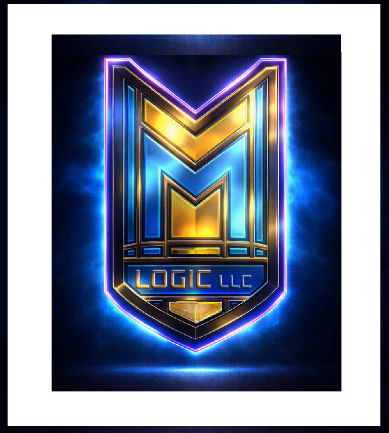

MYM LOGIC LLC is a multi‑disciplinary innovation studio specializing in brand identity, creative systems, and AI‑assisted product prototypes. We combine design, technical architecture, and accessibility‑focused experimentation to build solutions that are visually strong, structurally clear, and ready for real‑world use.
Cycloneering and Pyroteching — the twin disciplines of reinvention and ignition. We study existing systems, extract their underlying mechanics, and re‑engineer those principles into new structures, new tools, and new forms of innovation.
Built for speed and precision. MYM Logic delivers rapid identity builds, overnight pitch decks, last‑minute commercial concepts, and one‑stop design solutions when time is running out.
A fast, intuitive identity package built from your brand’s energy. Includes logo, color palette, typography, voice guide, social graphics, and a one‑page identity sheet. Direction decided in the first 15 seconds — delivered within hours.
Starting at $150–$300
Start Your Brand KitA working demo and visual proof‑of‑concept for early‑stage founders. Includes basic UI, requirements documentation, and a guided video walkthrough.
Prototype My IdeaInstant‑load tools built to prove capability fast. Try the demo, see it work, buy the full version. No subscriptions. No friction.
Translate code, generate snippets, and test ideas instantly.
Try Demo$10 Full Version
The MYM Lab is where new concepts, prototypes, and experimental systems are built. Projects include accessibility‑focused interfaces, local AI chat engines, creative tools, and early‑stage product experiments.
A tactile/braille driver enabling blind and low‑vision users to operate touchscreen devices through structured tactile output.
A next‑generation braille technology platform engineered for speed, clarity, and modern digital integration.
MYM Logic operates through focused creative and technical divisions, each supporting different aspects of design, analytics, accessibility, and education.
ODDS — Design & Development Studio
ADDS — Analytics & Data Design Studio
KINDS Creative — Creative‑assistive media
KINDS EDUSPHERE — Education‑focused tactile and creative tools
MYM Logic LLC was founded by Sterling Lawson, a rapid‑identity architect specializing in fast‑direction branding, emergency deadline solutions, and demo‑first product prototypes. Sterling combines customer‑facing clarity with technical system thinking to deliver brand identity, commercial concepts, and working demos at high speed and high precision.